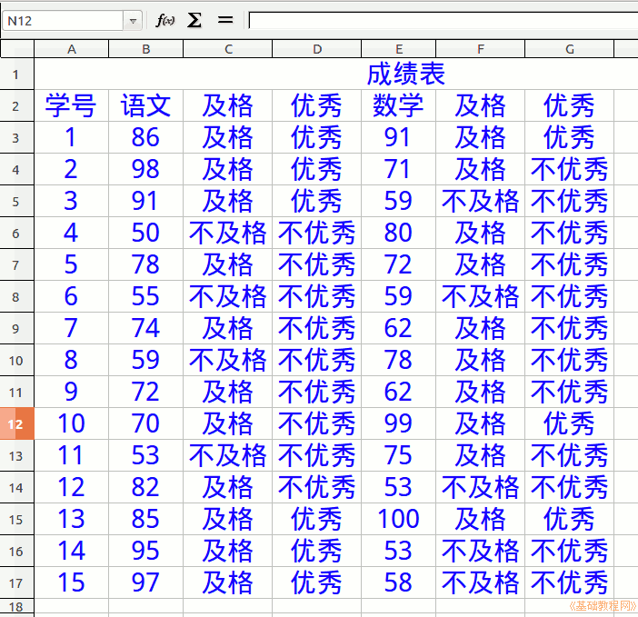

2015-2016 第一学期七年级电子表格和音视频编辑教学设计
作者：TeliuTe 来源：基础教程网
八、 返回目录 下一课
（一）教学设计
1、学习目标：
2、注意事项：绕过弯来，既不要跳也不要落，一楼过了二楼
3、教学过程：
1）教师准备学案和板书；
2）学生整队进入，开机抄黑板上笔记；
3）教师讲解板书演示操作；
4）学生打指法、日志、完成操作；
5）教师打勾记录学生指法成绩，检查日志和操作；
注：学生抄完笔记就开始打指法、日志，老师讲完后再继续完成；
操作图示：

（二）板书设计(学生笔记)、课后记
08学会判断及格优秀
1.输入表头，自动填充15人成绩
2.用randbetween和if函数
3.按回车键到下一行，tab到右边一格
4.撤销在编辑里
第8课 学会判断及格优秀
1.输入表头，自动填充15人成绩
2.用Randbetween和if函数
(50~100)
3.按回车键到下一行，tab到右边一格
4.撤销在编辑里
--
2016年03月21日 星期一 17:23
--
复习一下两个函数，randbetween和if
3班习惯了我讲完再做，结果磨磨蹭蹭最后还有2个没做完的居然
--
2班的冯玉刚落下了，学习习惯这个得多想想才行
抄笔记，心思放学习，先学后玩，每节课上一个台阶这些
--
演示把回车键和tab键，home、end、pageup这些点一下
还有撤销，修改函数的方法，也带一下，直接还点fx进去改参数
--
学生还有漏掉一个参数，if有3个参数
其他三个班还好，不过还是有慢的，一直落到下课之前
--
有些春困秋乏的感觉，学习气氛不是很活跃，有些沉闷的感觉
学习压力大吗，害怕做不出来，还是担心没玩的时间
--
做的时候把函数的四个步骤：fx，单词，参数，结果
绕弯的就是双引号，可以先打完中文，再打英文
--
学习习惯，讲过的要记，把输入条拖到最上面
扫一眼输入条，照着老师的操作学会
返回目录 下一课
本教程由86团学校TeliuTe制作|著作权所有
基础教程网：http://teliute.org/
美丽的校园……
转载和引用本站内容，请保留作者和本站链接。